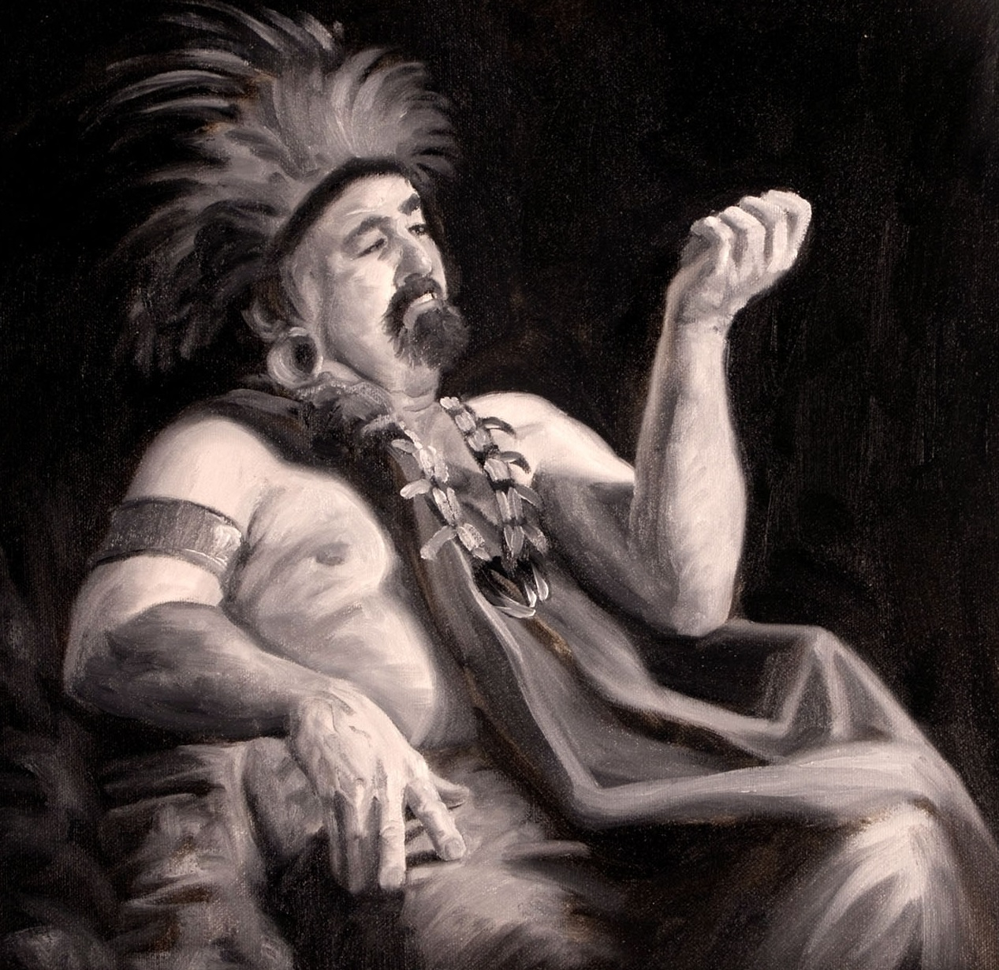

Brief biography
circa A.D. 16

Giddianhi was a leader of the Gadianton robbers. Under his leadership, the robbers waged a bloody and deadly war against the people of Nephi (3 Nephi 2:11). Giddianhi sent a letter to the Nephite chief judge, Lachoneus I, insisting that he and the Nephites surrender their rights and territory to the robbers (3 Nephi 3:1-10). Lachoneus refused and the Nephites defended themselves (3 Nephi 4:13-26). Giddianhi’s people were unable to plunder the Nephites’ resources and were forced to battle against them (3 Nephi 4:2-4). The Nephites defeated them and killed Giddianhi (3 Nephi 4:14).
Total recorded words -- 499
Insights into words and phrases
In only 499 words, Giddianhi uses the verb "do" over seven times more
frequently than speakers in the rest of the Book of Mormon. He is the only
speaker to use the word "sealing" (in the context of writing and sealing a
letter personally). Giddianhi uses flattery in an attempt to persuade the
Nephites to surrender to his demands. He is the only speaker in the Book of
Mormon to use the words "brave" and "noble." He uses the word "noble" three
times in his letter to Lachoneus, referring to the chief judge as "most
noble" (3 Nephi 3:2-3), and to the Nephites’ "noble spirit in the field of
battle" (3 Nephi 3:5).
Giddianhi assures the Nephites that he
can be trusted by invoking a supposedly sacred oath. If the Nephites join
him, "I swear unto you, if ye will do this,
with an oath, ye shall not be destroyed." Otherwise, "I
swear unto you with an oath, that
on the morrow month," he will attack and destroy them.
Mormon’s account subtly undermines the reliability of Giddianhi’s oath when
he mentions that the Gadianton robbers did not attack on "the
morrow month" of the sixteenth year, as promised, but about three years
later (3 Nephi 4:1, 5).
Giddianhi’s letter conceals his ulterior
motives under a façade of concern. He praises the Nephites’ "firmness" in
battle, saying, "ye do stand well, as if ye were supported by the hand of a
god" (3 Nephi 3:2). At the same time, he feigns concern by "feeling" for
their welfare (3 Nephi 3:5), but insists that the Nephite cause is hopeless,
and that the Nephites are denying the superior skills of the Gadianton
forces. He invites the Nephites to join him in familial terms: They can be
"brethren" (3 Nephi 3:7). Giddianhi, like earlier predecessors, "was
exceedingly expert in many words" (Helaman 2:4) to seduce the unwary,
thereby gaining the influence and power needed to destroy others.
Personal application
Similar to the devil’s, Giddianhi’s clever and flattering words are a deceptive front concealing a hungry predator with unbridled enmity. These tactics, revealed in the Book of Mormon, warn us against similar flatteries in our own day. If we keep the commandments and follow the Holy Ghost, we can be aware of them and not be fooled.
Chronology
All dates are approximate.
Before A.D. 16. Giddianhi leads the Gadianton robbers against the
Nephites and causes great destruction throughout the land.
A.D. 16. Giddianhi write to Lachoneus, the Nephite chief judge, and
demands that the Nephites capitulate to the robbers. He invites them to join
with him in his wickedness.
A.D. 18. Giddianhi leads the Gadianton armies into the lands of the
Nephites and finds that the Nephites are gone.
A.D. 19. Giddianhi, unable to plunder the empty Nephite lands, leads
his armies against the Nephites and is killed in battle.